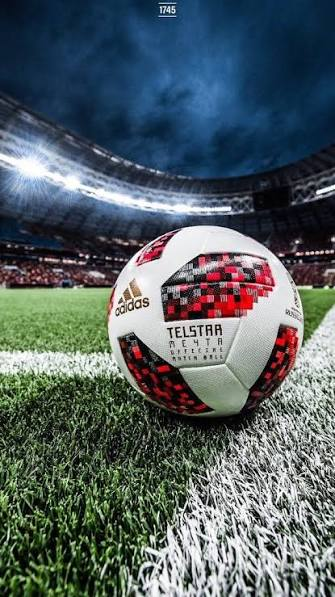

ابحث عن رياضي
منارة تربط الرياضيين بالأندية والأكاديميات الموثوقة في كل الرياضات بملفات موثّقة، وعملية كشافة تحترم وقتك.

اكتشف المواهب في كل الرياضات
تصفّح الرياضيين الموثّقين، راجع ملفاتهم، وراسل من تختار.
كرة القدم
0 لاعب متاحكرة السلة
0 لاعب متاحتنس
قريباًالكرة الطائرة
قريباًكرة اليد
قريباًجولف
قريباًكاراتيه
قريباًسباحة
قريباًأفضل أنديتنا
ابدأ في ثلاث خطوات بسيطة
كرة القدم متاحة على منصة منارة الآن.
أنشئ حسابك
سجّل كلاعب أو كنادٍ في أقل من دقيقة عبر ملف موثّق على منارة.
أكمل ملفك
أضف بياناتك ومركزك وأبرز لقطاتك مراكز كرة القدم متاحة حالياً.
تصفّح وابدأ الظهور
تصفّح الرياضيين الموثّقين بزر «عرض»، وبمجرد اكتمال ملفك تجدك الأندية ضمن النتائج.
مزايا تجعل عملك أسهل
ملفات موثّقة وأدوات تساعدك على إيجاد فرصتك والوصول إليها بسرعة.
ملفات موثّقة
كل رياضي يتم التحقق من هويته قبل نشر ملفه على المنصة.
بحث ذكي
صفِّ النتائج حسب الرياضة والمركز والمستوى تتحدث النتائج فوراً.
رسائل مباشرة
تواصل مع اللاعبين أو الأندية وتابع كل محادثة من مكان واحد.
إشعارات وتنبيهات
يصلك ملخّص بالرياضيين الجدد الموثّقين الذين يطابقون بحثك.
انتقالات سريعة
اتفق على الشروط وأكمل الانتقالات خلال أيام بدل أشهر.
الأسئلة الشائعة
كل ما تحتاج معرفته عن الكشافة والانضمام إلى منارة.
هل البحث والتواصل مع اللاعبين مجاني؟
نعم. البحث والتصفية وإرسال الرسائل متاحة بالكامل مجاناً للأندية. الرياضيون ينشئون ملفاً موثّقاً واحداً
لو لاعب عجبني اعمل ايه؟
تتواصل مع الدعم من هذا الرقم 01229409393 و تكتب اسم ثلاثي و المركز
كيف تعمل الفلاتر الفورية؟
فلاتر الكلمات المفتاحية والرياضة والتوفر تعمل فوراً عند التغيير — في صفحة اللاعبين الكاملة يمكنك أيضاً تصفية بالرياضة والتوفر فقط للحصول على النتائج الدقيقة التي تبحث عنها.
هل يمكنني تلقي إشعارات عن مواهب جديدة؟
نعم. أدخل بريدك الإلكتروني وستتلقى ملخصاً أسبوعياً باللاعبين الجدد الموثّقين الذين يطابقون بحثك. يمكنك تعديل الرياضات والمواقع التي تتابعها وإلغاء الاشتراك بنقرة واحدة.
كم تكلفة الانضمام كنادي؟
ملف النادي الأول مجاني. بعدها تدفع اشتراكاً شهرياً ويشمل كل خطة أكمل رحلة الكشافة مع تصفية مبنية على المهارات.
هل اللاعبين في منارة موثّقون؟
نعم. نتحقق من كل رياضي قبل نشر ملفه، ونفحص هويته وعقد ناديه الحالي وتأكد من صحة إحصائياته وقيمتهم السوقية. الملفات التي لا تلبي المعايير لا تظهر في المنصة.
ما الرياضات المدعومة؟
حالياً تدعم منارة كرة القدم وكرة السلة. سنضيف المزيد من الرياضات في التحديثات المستقبلية، وتُضاف رياضات جديدة عند الطلب — تواصل معنا إذا لم تكن رياضتك موجودة.
كيف يمكن للاعب الاستفادة من Manara؟
Manara هي منصة لاكتشاف مواهب كرة القدم، تهدف إلى تنظيم عملية الوصول إلى اللاعبين وتقريب المسافة بينهم وبين الأندية والأكاديميات من خلال ملفات لاعبين منظمة وسهلة البحث.
من يمكنه التسجيل في Manara؟
هل التسجيل في Manara يضمن للاعب فرصة مع نادٍ؟
كيف يبحث النادي عن اللاعبين؟
يمكن للنادي استخدام البحث والفلاتر للوصول إلى اللاعبين وفق البيانات والمركز والمعلومات المتوفرة في ملفاتهم.
ماذا يحدث إذا اهتم نادٍ بلاعب؟
يمكن للنادي إرسال طلب اهتمام من خلال المنصة، وبعد ذلك يتم التعامل مع التواصل وفق آلية Manara لحماية الطرفين وتنظيم عملية التواصل.
هل بيانات اللاعب متاحة للجميع؟
تُعرض المعلومات التي يضيفها اللاعب إلى ملفه وفق إعدادات المنصة، مع تطبيق إجراءات تهدف إلى حماية بيانات المستخدمين.
هل يجب على اللاعب رفع مستندات؟
قد تطلب Manara بعض المستندات أو المعلومات للتحقق من بيانات اللاعب قبل نشر ملفه، وذلك بحسب متطلبات المنصة.
هل Manara توفر عقدًا أو تضمن انتقال اللاعب؟
لا. Manara هي منصة لاكتشاف وتنظيم فرص التواصل بين اللاعبين والأندية، ولا تضمن إتمام أي تعاقد. أي اتفاق تعاقدي يتم بين اللاعب والنادي وفق الشروط المتفق عليها بين الطرفين.
هل يمكن لولي الأمر متابعة تسجيل اللاعب؟
نعم، ويمكن لولي الأمر المساعدة في إنشاء ملف اللاعب ومتابعة الإجراءات، خصوصًا عندما يكون اللاعب قاصرًا.
كم تكلفة استخدام Manara؟
تختلف الخدمات والتكاليف حسب نوع الحساب والخطة المتاحة. يمكنك الاطلاع على صفحة الاشتراكات لمعرفة التفاصيل الحالية.
هل توجد فترة تجريبية؟
قد تتوفر فترة تجريبية لبعض الخطط أو المستخدمين وفق العرض الحالي على المنصة.
كيف أتواصل مع Manara إذا واجهت مشكلة؟
يمكنك التواصل مع فريق دعم Manara من خلال وسائل التواصل الرسمية الموجودة على الموقع، وسيساعدك الفريق في الاستفسارات المتعلقة بالحساب أو الملف أو فرص التواصل.
هل Manara تضمن أن النادي سيشاهد ملف اللاعب؟
لا يمكن ضمان مشاهدة أو اختيار لاعب معين من قبل نادٍ. هدف Manara هو تنظيم الملفات وتسهيل عملية البحث والاكتشاف.
هل يمكن للنادي العثور على مواهب خارج نطاق شبكة الكشافين المعتادة؟
نعم، من أهداف Manara تسهيل وصول الأندية إلى لاعبين قد لا يصلون إليها من خلال طرق البحث التقليدية.
ما الهدف الأساسي من Manara؟
نؤمن أن هناك مواهب تستحق فرصة، لكن المشكلة أحيانًا ليست في الموهبة، بل في عدم وصولها إلى الشخص المناسب. لذلك تعمل Manara على تقليل هذه المسافة وتنظيم عملية اكتشاف المواهب.